Paper figures v2: review
D-B114 (PI 2026-11-27 13:13: "Make the paper figures more beautiful, even for the tomography"). Framing
D-B107/D-B109: seismicity style and fault-zone structure at the offshore plate boundaries; structure only at
plate-boundary scale (40 km); no full-size model maps. Catalog v6.1, model v0.4.2, segments
after D-B113. Built Fri 27 Nov 2026 13:53 PST; branch paper/figures-v2 at 922d7582. Working page; nothing here is in
paper_sciadv/figures/ yet (the PI picks first).
Web copies: JPEG, 2000 px wide. Full-resolution PDF (vector) and 300 dpi PNG are in /wd1/mdenolle_data/paper_plan/figures_v2/.
Fig. 1Fig. 2Fig. 3Fig. 4Fig. 5Fig. 6Fig. SFig. SFig. SFig. S Style Rerun
Main figures
Fig. 1 · Plate boundaries and data
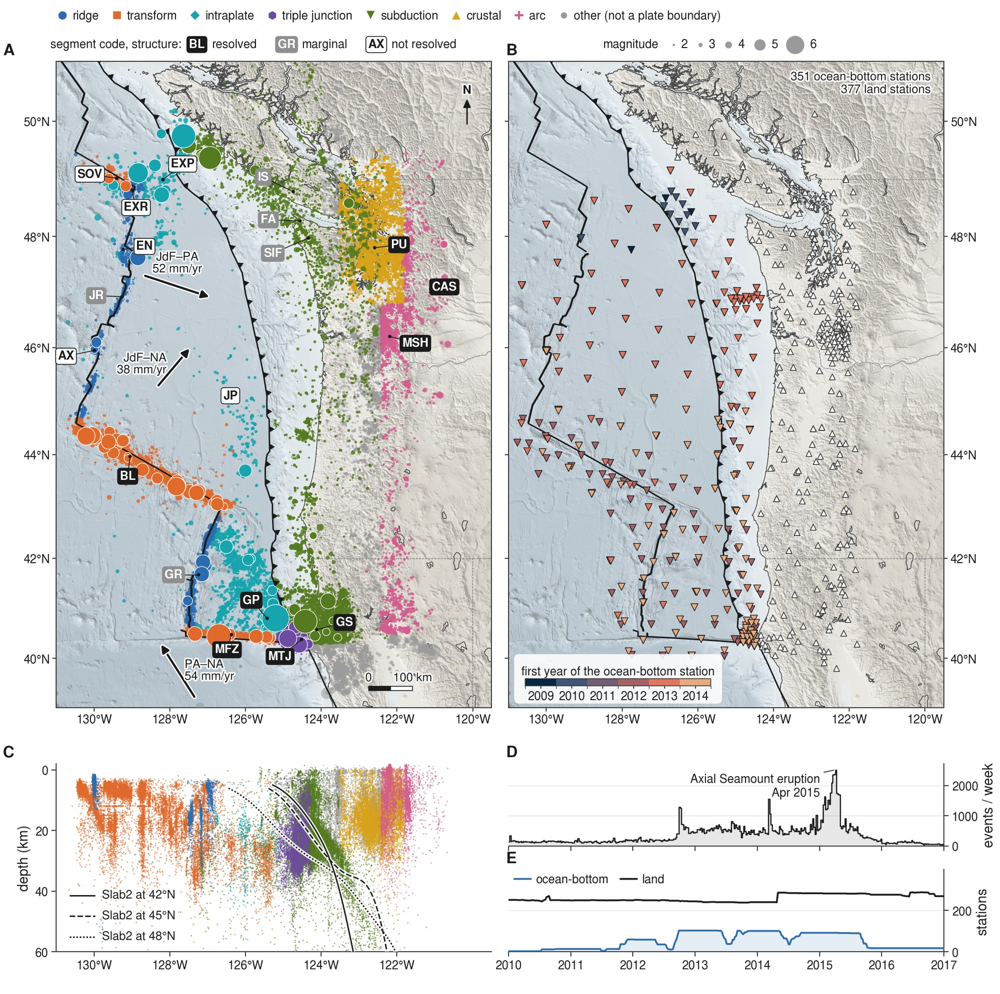
Caption draft. Plate boundaries and data. (A) 135,317 tier A-C earthquakes of catalog v6.1 (flagged events and the waveform-review P1 set left out), coloured by the type of their segment; symbol size scales with magnitude (events without a magnitude drawn at M 0). Labels: segment codes; label fill gives the structure class of model v0.4.2 near the segment (black resolved, grey marginal, white not resolved). Black lines: plate boundaries (spreading axes of the southern Gorda Ridge, the Gorda-Mendocino stub and the Juan de Fuca Ridge at 46.4-47.7°N picked from the bathymetry, D-B113; PB2002 elsewhere); teeth on the upper plate. Arrows: NNR-MORVEL56 relative plate motions. Relief: GMRT. (B) 351 ocean-bottom stations (inverted triangles, colour = first year, 2009-2014) and 377 land stations (open triangles) with picks in the catalog. (C) Depth against longitude for the 104,642 depth-good events, same colours; lines: Slab2 at 42, 45 and 48°N. (D) Events per week (7-day bins). (E) Ocean-bottom and land stations operating per week.
Before: current paper figure fig1_overview.png
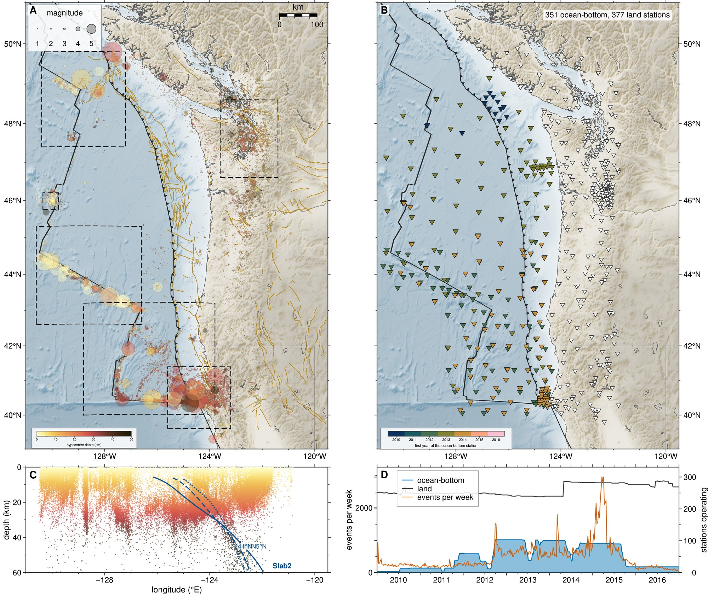
Fig. 2 · Seismicity-style fingerprint
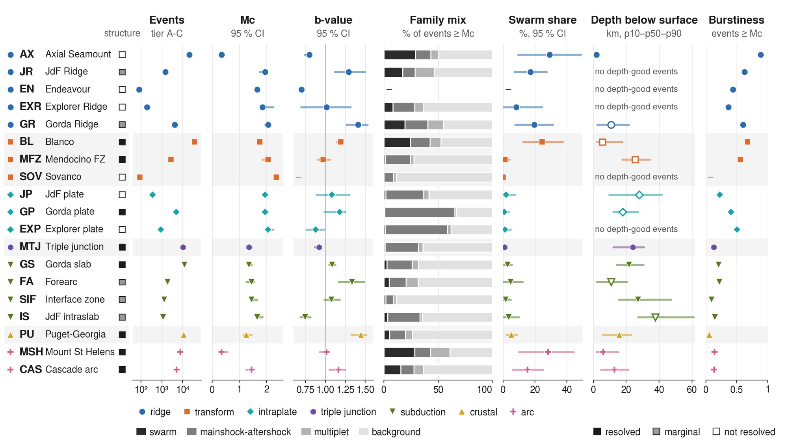
Caption draft. Seismicity style of 19 plate-boundary segments of catalog v6.1 (tier A-C earthquakes; flagged events and the waveform-review P1 set left out), grouped by boundary type (colour and marker). Events: number of events. Mc: maximum curvature + 0.2; b: Aki-Utsu estimate above Mc; bars: 95 % intervals over 500 bootstrap draws. Family mix: shares of the events above the clustering Mc that are background, in mainshock-aftershock families, in swarms and in multiplets (nearest-neighbour clustering of the catalog); swarm share with its 95 % bootstrap interval over units. Depth below the solid surface (ground or seafloor) of depth-good events: p10-p90 bar and median (open symbol: depth class fair, median σz 3-6 km; no symbol: fewer than 50 depth-good events). Burstiness (σ − μ)/(σ + μ) of the inter-event times of events above the segment Mc. Square at the right of each label: structure class of model v0.4.2 near the segment (filled resolved, grey marginal, open not resolved). Segments: AX, JR, EN, EXR, GR, BL, MFZ, SOV, JP, GP, EXP, MTJ, GS, FA, SIF, IS, PU, MSH, CAS.
Before: current paper figure fig5_clustering.png
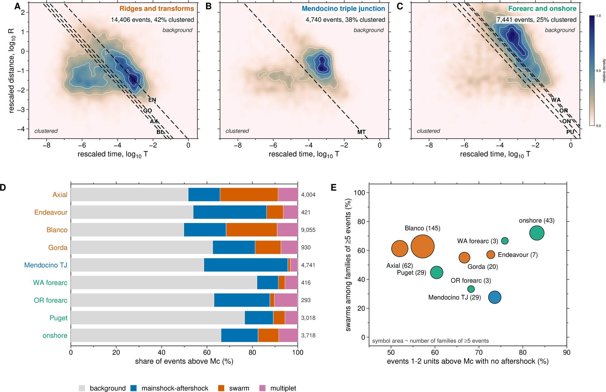
Before: plan mock-up fig_fingerprint.png
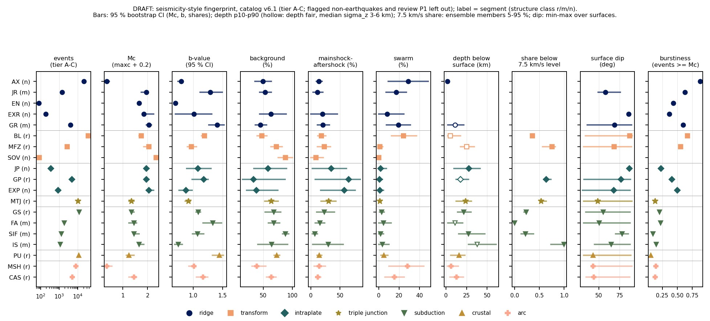
Fig. 3 · Fault geometry per boundary
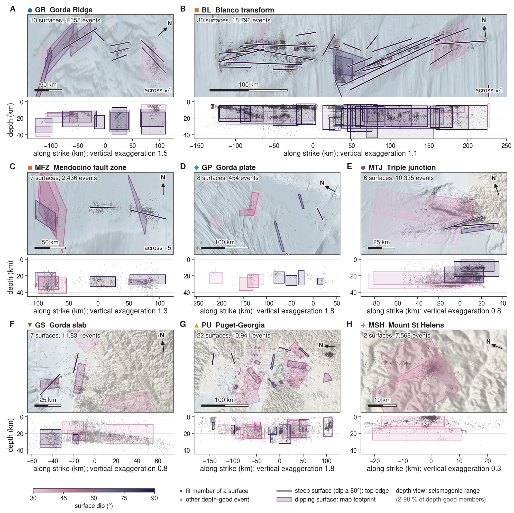
Caption draft. Fault surfaces v1 refit on catalog v6.1 by plate-boundary segment (95 surfaces in 8 segments). Top of each panel: plan view in the segment frame (x along the strike of the segment's epicentres, y across, north arrow), GMRT relief, depth-good tier A-C events (dark grey: fit members of a surface); steep surfaces (dip ≥ 80°) as their top edge, dipping surfaces as their map footprint, coloured by dip; the across direction is exaggerated where printed. Bottom: depth against along-strike distance with each surface's along-strike extent over the 2-98 % depth range of its depth-good members; VE = vertical exaggeration. 1 surface of the suspect Mount St Helens deep population (members deeper than 30 km) is left out. GR: 13 surfaces, 1,355 events; BL: 30 surfaces, 18,796 events; MFZ: 7 surfaces, 2,436 events; GP: 8 surfaces, 454 events; MTJ: 6 surfaces, 10,335 events; GS: 7 surfaces, 11,831 events; PU: 22 surfaces, 10,941 events; MSH: 2 surfaces, 7,568 events.
Before: current paper figure fig3_fault_surfaces.png
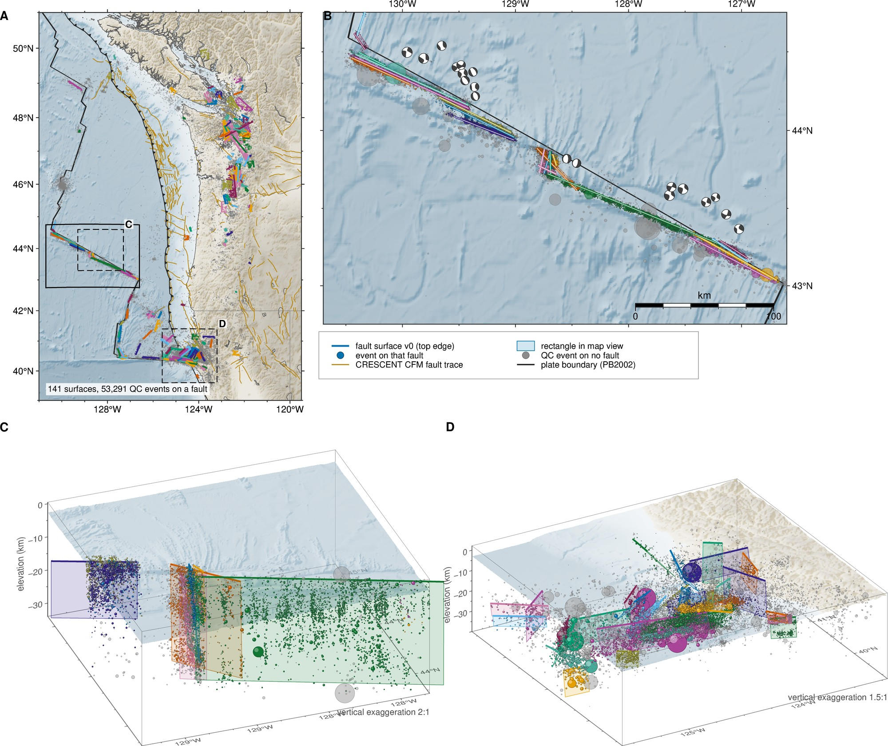
Before: current paper figure fig4_blanco_strands.png
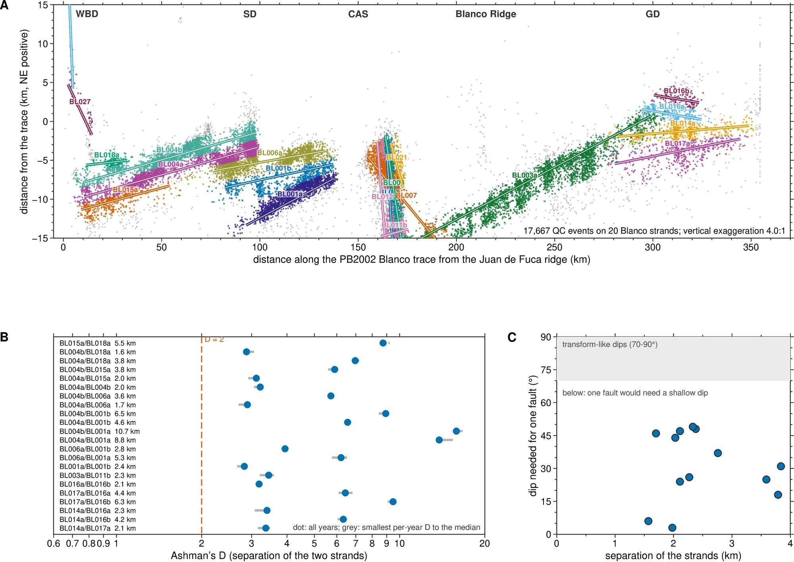
Fig. 4 · Fault-zone tomography
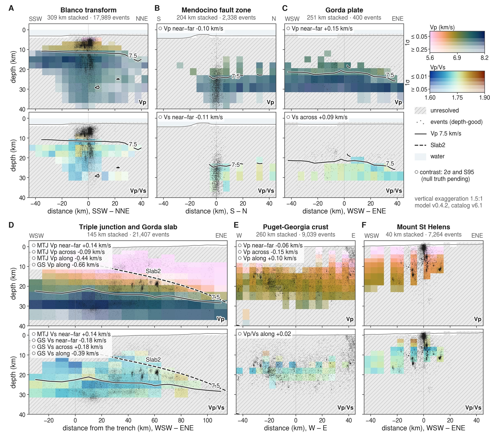
Caption draft. Fault-zone structure of model v0.4.2 at the resolved plate-boundary segments. Each panel pair is a section normal to the segment (BL, MFZ, GP, MTJ, PU, MSH), stacked along strike over the extent of the segment's events (length above each panel) and binned at 5 km in distance (MTJ 10 km: few resolved nodes per 5 km bin) and by depth layer. Top: Vp; bottom: Vp/Vs. Colour: the mean of the resolved nodes of a bin (at least 2; rock and checkerboard-resolved or DWS ≥ 100; P for Vp, P and S for Vp/Vs). Opacity: 1σ of the same bin mean over the 100 ensemble members (× 1.5 for Vp, × 1 for Vp/Vs); full colour at ≤ 0.05 km/s and ≤ 0.01, faintest at ≥ 0.25 km/s and ≥ 0.05. Hatched: rock bins without resolved nodes. Pale blue: water. Dots: depth-good tier A-C events of the segment (catalog v6.1). Solid line: Vp 7.5 km/s; dashed: Slab2. Text: depth-matched contrasts of the segment that pass 2σ of the ensemble and the synthetic S95 (D-B111); the null-truth control (D-B112) is pending. Frames: PB2002 transform trace re-centred on the seismicity (BL, MFZ), the strike line of the segment's epicentres (GP, PU, MSH), a north-south line at 124.75°W (triple junction and Gorda slab). Vertical exaggeration 1.5. The model resolves structure on a 40 km scale, not a fault damage zone.
Before: plan mock-up fig_sections_BL_MFZ.png
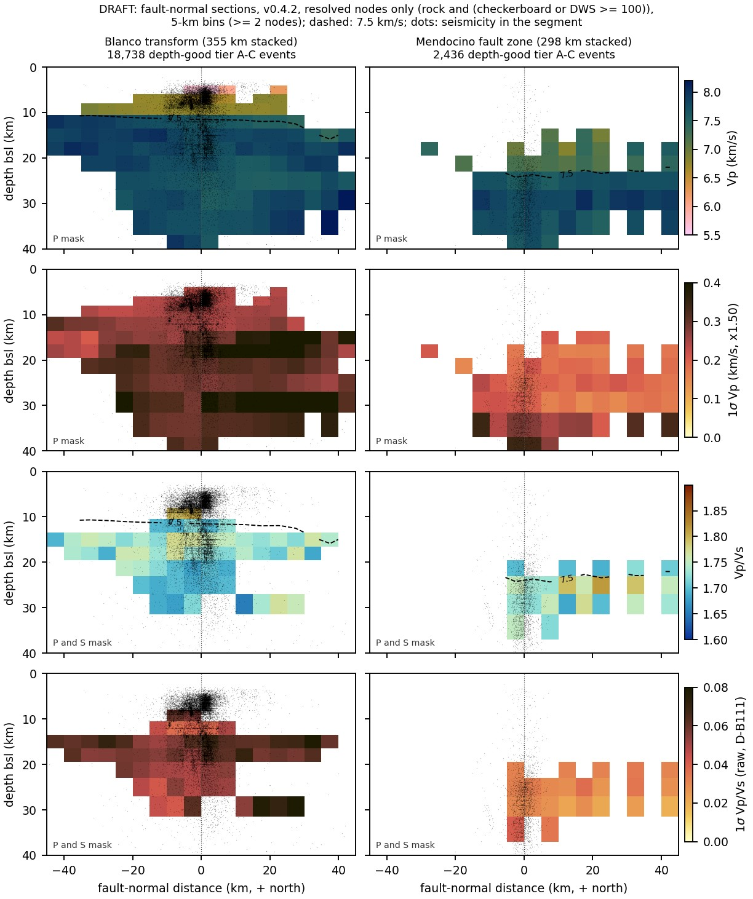
Fig. 5 · Structure against seismicity
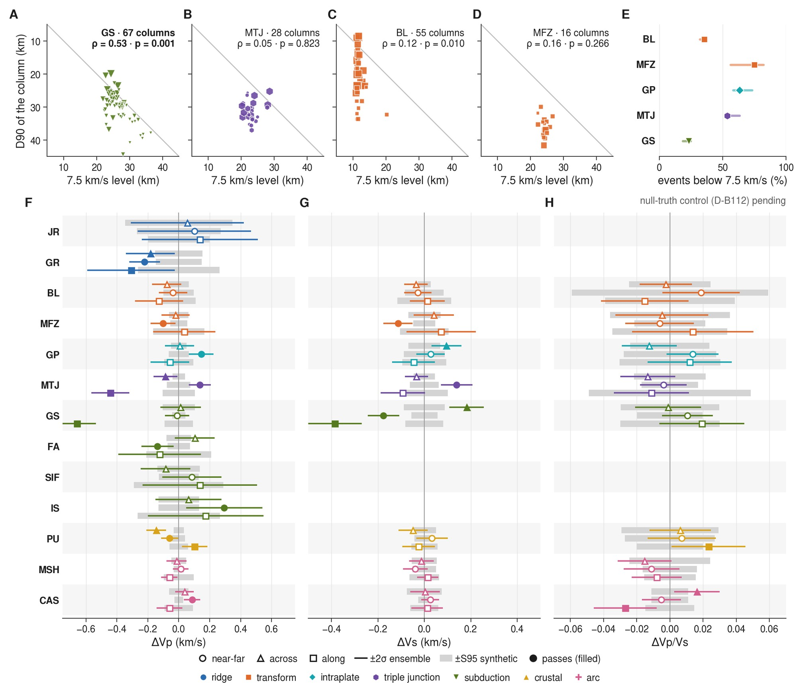
Caption draft. Structure against seismicity. (A-D) Seismicity bottom against the Vp 7.5 km/s level per model column (0.125° × 0.1°, at least 20 depth-good tier A-C events and a resolved level): D90, the 90th percentile of event depth, against the depth of the first Vp crossing of 7.5 km/s between two resolved nodes; symbol size grows with the number of events; grey line 1:1. ρ: Spearman rank correlation; p: share of 1000 permutations of the levels among the segment's columns with a smaller spread of D90 − level (GS: ρ = 0.53, p = 0.001). (E) Share of the depth-good events below the 7.5 km/s level, segments with a resolved level for at least 30 % of their events; bar: 5-95 % over the ensemble members, each with its own level. (F-H) Depth-matched contrasts of Vp, Vs and Vp/Vs of model v0.4.2 for the resolved and marginal segments: near−far (nodes within 5 km of the segment's faults and seismicity minus nodes 10-20 km away), across (the two sides of the segment's strike line) and along (the two ends of the segment); bar: ±2σ of the same contrast over the 100 ensemble members (× 1.50 Vp, × 1.35 Vs, × 1.00 Vp/Vs); grey band: ±S95, the 95th percentile of |recovered − true| contrast over the 100 members of the synthetic calibration ensemble (D-B111); filled: |Δ| ≥ 2σ and ≥ S95 (the null-truth control, D-B112, is pending); 32 contrasts pass. Colour and marker of the segment type as in Fig. 2.
Before: plan mock-up fig_circularity.png
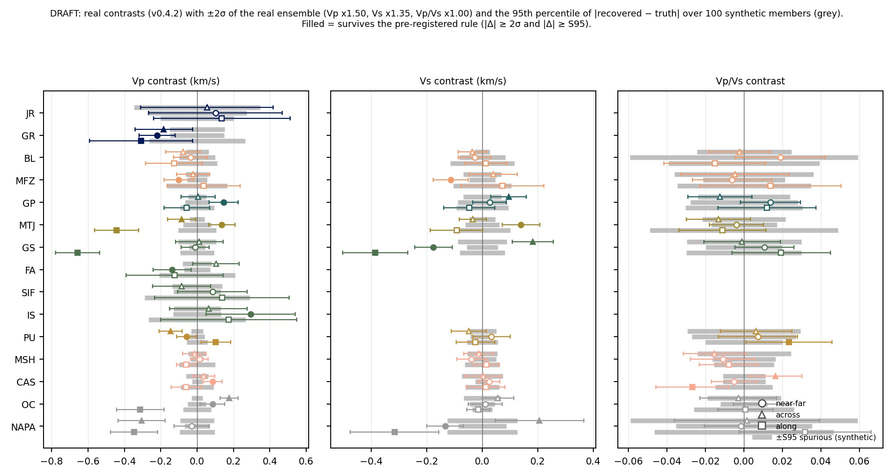
Fig. 6 · Temporal character
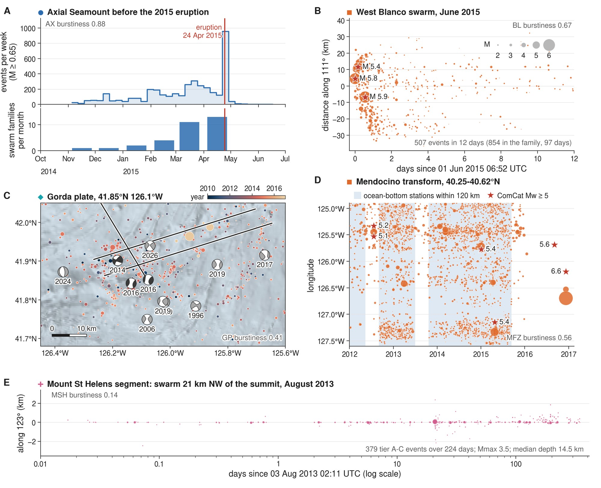
Caption draft. Temporal character of four boundary types, catalog v6.1 with its nearest-neighbour clustering. (A) Axial Seamount, October 2014 to June 2015: events at or above the regional clustering Mc (0.65) per week and swarm families per month (32 families); red line: 24 April 2015 eruption. (B) West Blanco swarm family of June 2015: distance along 111° against time, first 12 days (507 of 854 events); stars: M ≥ 5. (C) Gorda plate source near 41.85°N 126.1°W: tier A-C events (597) coloured by time, fault surfaces v1 (top edges, 3), ComCat moment tensors (dark: 2010-2016, grey: other years; labels: year). (D) Mendocino transform between 40.25 and 40.62°N, 2012-2016: longitude against time (3,911 events); shading: weeks with ocean-bottom stations within 120 km; stars: ComCat Mw ≥ 5 (6). (E) Largest swarm family within 25 km of the Mount St Helens summit, 20.7 km NW of it (379 tier A-C events): distance along its long axis (123°) against time on a log scale. Symbol size scales with magnitude; colours by boundary type as in Fig. 1 (C: time). Burstiness of the segment (events ≥ segment Mc, whole period; 0 = Poisson, 1 = most bursty): AX 0.88, BL 0.67, GP 0.41, MFZ 0.56, MSH 0.14.
Before: current paper figure fig6_short_lived.png
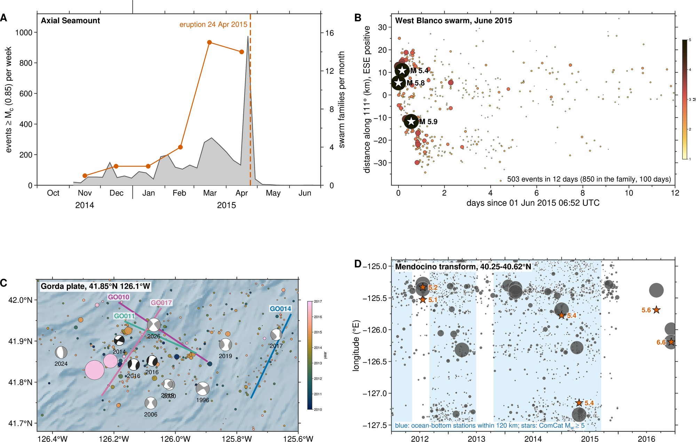
Supplement
Fig. S · Mc, three methods
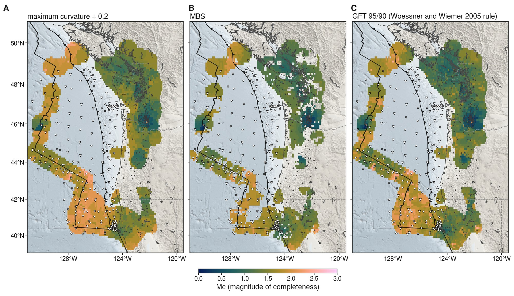
Caption draft. Magnitude of completeness of catalog v6.1 at 0.1° nodes (the 250 nearest events within 50 km; flagged events left out; 200 bootstrap draws), by three methods: (A) maximum curvature + 0.2, (B) MBS, (C) GFT at 95 % goodness of fit, else 90 %, else maximum curvature (Woessner and Wiemer, 2005). Nodes with Mc: 4,422; median Mc (C) 1.40. Inverted triangles: 351 ocean-bottom stations; small triangles: 377 land stations.
Before: current paper figure fig2a_mc_three_methods.png
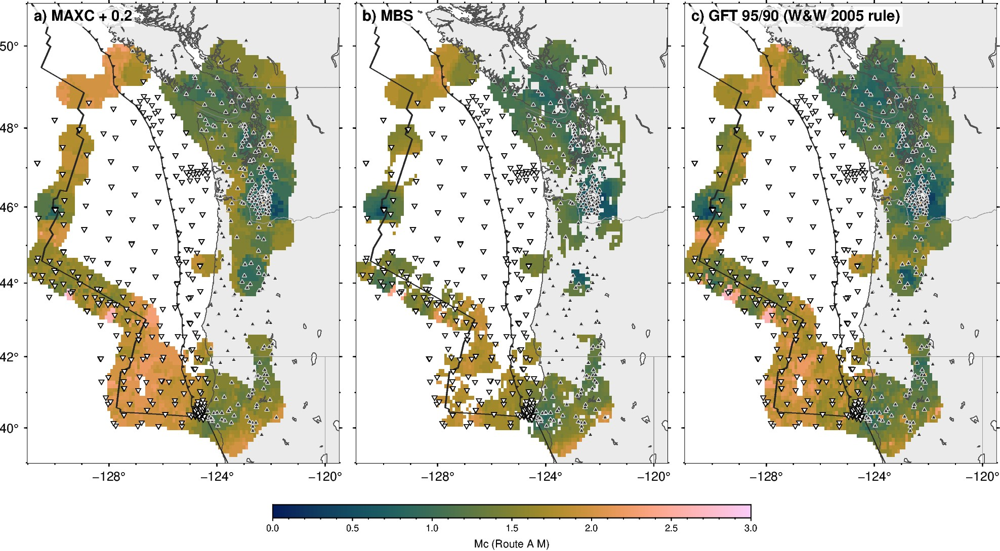
Fig. S · Mc by network period
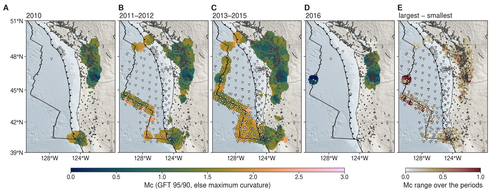
Caption draft. Magnitude of completeness of catalog v6.1 by network period (mc_best: GFT 95/90, else maximum curvature; the 150 nearest events within 50 km): (A-D) 2010 (1,100 nodes), 2011-2012 (2,524 nodes), 2013-2015 (4,289 nodes), 2016 (655 nodes); (E) largest minus smallest Mc at nodes with a value in at least two periods (2,563 nodes, median 0.20). Triangles: stations operating in the period (E: all).
Before: current paper figure fig2b_mc_periods.png
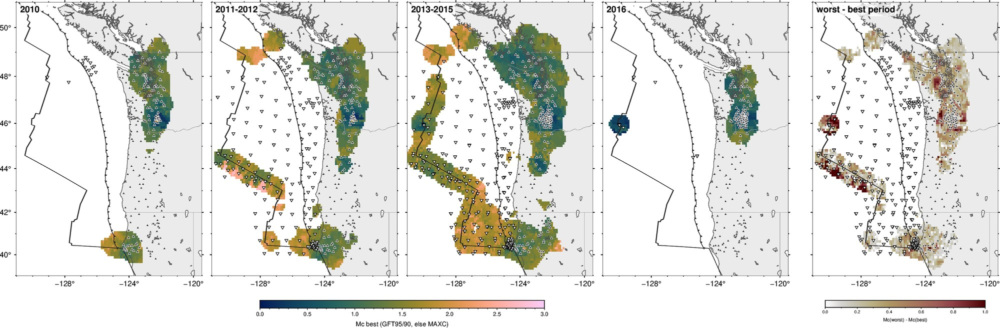
Fig. S · Catalog comparison
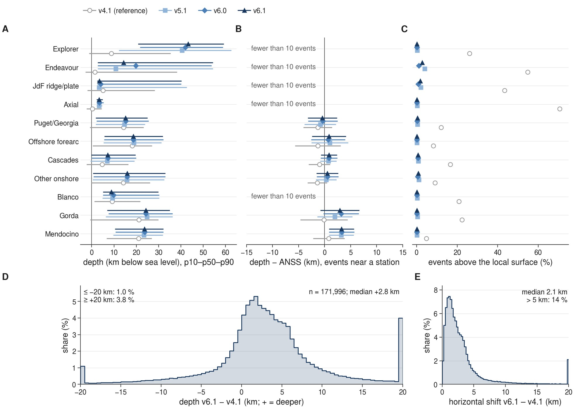
Caption draft. Catalog versions compared region by region against the reference v4.1 (v4.1, v5.1, v6.0, v6.1). (A) Depth below sea level: median (symbol) and 10th-90th percentiles (bar). (B) Depth minus the ANSS depth for events with a station within max(depth, 5 km): median and median absolute deviation, regions with at least 10 such events. (C) Share of events above the local solid surface. (D) Depth change and (E) horizontal shift of v6.1 against v4.1 for the 171,996 events located in both (linked by the v4 event id); values beyond ±20 km in the end bins.
Before: current paper figure figS_catalog_compare.png
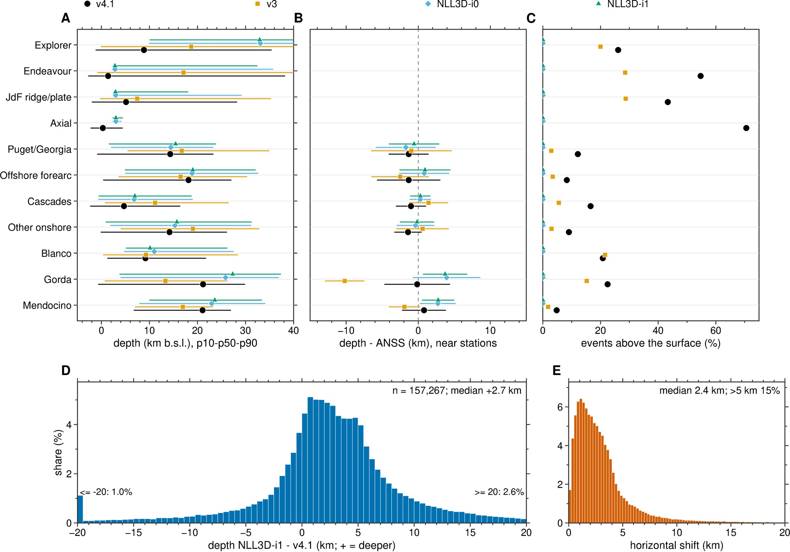
Fig. S · Mendocino perspective view
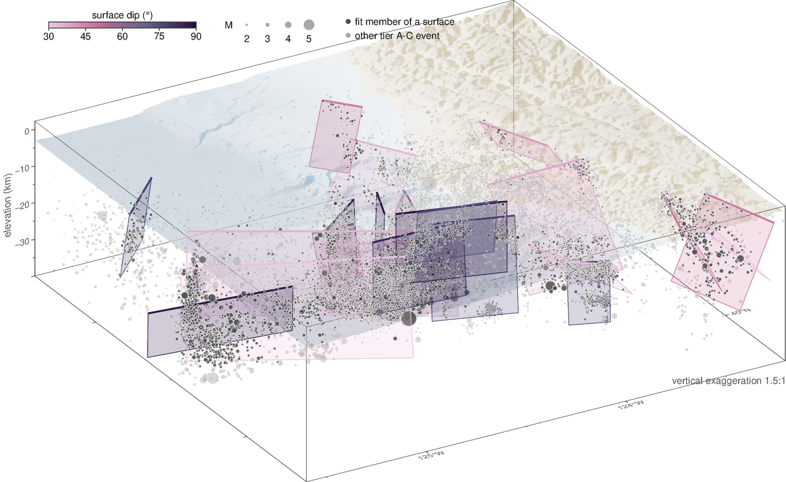
Caption draft. Perspective view of the Mendocino region (125.6° to 123.2°W, 39.6° to 41.4°N, to 40 km depth) from azimuth 210°, elevation 26°, vertical exaggeration 1.5:1. Relief: GMRT (gmrt_-125.6_-123.2_39.6_41.4_med.nc). Fault surfaces v1 refit on catalog v6.1 (24 surfaces with their centre in the box): rectangle and top edge, coloured by dip. Tier A-C events of the catalog (29,632; dark grey: fit members of a surface); symbol size scales with magnitude.
Before: current paper figure perspective_mendocino_fault.png
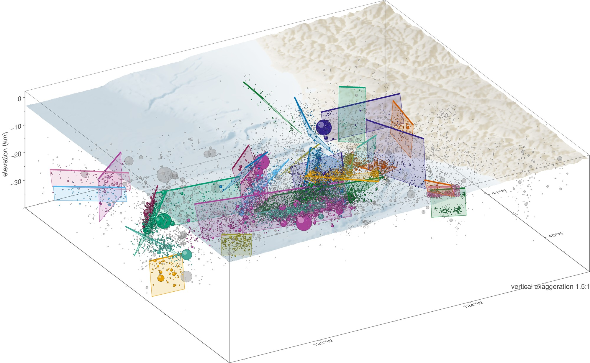
Style
| Sizes | Science Advances widths 8.6 cm (one column) and 17.8 cm (two columns); every figure here is 17.8 cm wide and at most 22 cm tall. |
|---|
| Type | One sans-serif family (Helvetica metrics: Nimbus Sans in matplotlib, Helvetica in GMT), 6 pt ticks and notes, 7 pt labels and titles, 8 pt bold panel letters A, B, C at the top-left corner of each panel. |
|---|
| Lines | Frames and ticks 0.5 pt; hairline grids (0.35 pt, solid, light grey) only where values are read; data lines 0.9 pt; ridges 1.1 pt, transforms and trench 0.8 pt with filled teeth on the upper plate. |
|---|
| Base map | GMRT relief (GridServer 'med' tiles mosaicked once into the cache) as a light hillshade from the north-west: grey-blue sea darkening with depth, warm light-grey land; coast 0.4 pt. |
|---|
| Plate boundaries | PB2002 with the D-B113 bathymetric axes (southern Gorda Ridge, Gorda-Mendocino stub, JdF Ridge 46.4-47.7 N) in place of the PB2002 ridges and oceanic transforms. |
|---|
| Boundary types | One colour and one marker per type (ridge, transform, intraplate, triple junction, subduction, crustal, arc; other in grey), checked under protanopia, deuteranopia and tritanopia (Machado 2009); the marker or the segment code always rides with the colour. |
|---|
| Colour maps | Crameri SCM (D-B104): Vp batlow reversed (one range 5.6-8.2 km/s), Vp/Vs roma reversed centred on 1.75 (1.60-1.90), dV vik reversed; time lipari, Mc batlow, depth lajolla, surface dip acton. |
|---|
| Uncertainty | Fig. 4: the ensemble 1σ of each binned value is its opacity (full colour at small σ, faint at large σ, 2-D key); cells without resolved nodes hatched grey; the water column pale blue. |
|---|
| Events | Symbol area from magnitude, one law for all figures (diameter 0.8 pt × 10^(0.2 M)); dense clouds as small translucent dots; size key where size carries magnitude. |
|---|
| Map furniture | Scale bar and north arrow on maps; NNR-MORVEL56 relative plate motions as cased arrows. |
|---|
| No dual axes | The old Fig. 1D and Fig. 6A each had two y axes; both are now two stacked panels on one time axis. |
|---|
| Output | Vector PDF (fonts embedded, dense layers rasterised at 300 dpi) and 300 dpi PNG per figure. |
|---|
Boundary-type palette
| type | colour | marker | OKLCH L | OKLCH C | contrast on white |
|---|
| ridge | #2B6CB0 | o | 0.524 | 0.126 | 5.42 |
| transform | #E06A2C | s | 0.657 | 0.164 | 3.35 |
| intraplate | #16A4AE | D | 0.656 | 0.108 | 3.02 |
| triple junction | #6E4BA3 | h | 0.493 | 0.138 | 6.57 |
| subduction | #557A1F | v | 0.533 | 0.125 | 5.01 |
| crustal | #D9A21B | ^ | 0.744 | 0.147 | 2.3 |
| arc | #D35D8E | P | 0.639 | 0.157 | 3.67 |
| pairs | worst CVD ΔE (protan/deutan) | worst normal ΔE | worst tritan ΔE | verdict |
|---|
| adjacent (legend order) | 17.0 (subduction / crustal) | 23.4 (crustal / arc) | 7.9 (triple junction / subduction) | pass |
| all pairs | 2.9 (ridge / triple junction) | 11.1 (ridge / triple junction) | 4.2 (transform / arc) | below floor: marker and label carry identity |
| map neighbours | 14.0 (arc / subduction) | 16.5 (ridge / intraplate) | 7.9 (triple junction / subduction) | pass |
OKLab ΔE × 100; target ≥ 8 under dichromacy and ≥ 15 for normal vision (dataviz method). Seven hues cannot all be pairwise distinct under dichromacy, so the marker and the segment code carry identity wherever colours meet; the adjacent legend pairs and every pair of types that touch on the map pass.
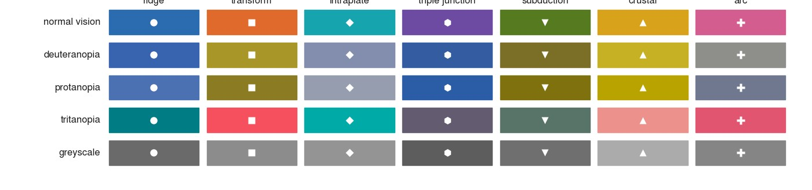
Rerun
One command rebuilds every figure, the manifest and this page from the paths in the configuration:
bash workflow/08_figures/run_figures_v2.sh workflow/08_figures/paper_figures_v2.yaml
Inputs read: catalog v6.1 event table with segments (events_segments), segment
tables (seismicity_metrics, structure_feasibility, segment_axes,
surface_segments), contrasts (circularity_contrasts, null_truth_contrasts),
depth_vs_level*, the D-B113 axes (plate_axes), clusters, fault surfaces v1, Mc maps, model
v0.4.2 and its 100 members. Segment codes, names and types come from the tables, so a new segment rule needs no code
change. After the null-truth score (D-B112) writes null_truth_contrasts.csv into
/wd1/mdenolle_data/paper_plan/v6.1/tables, Figs. 4 and 5 switch on their own: filled symbols = claimed, the N95
bands appear, and the captions drop "pending". Null truth not scored yet at this build.
Configuration: /home/mdenolle/wt_figs2/workflow/08_figures/paper_figures_v2.yaml